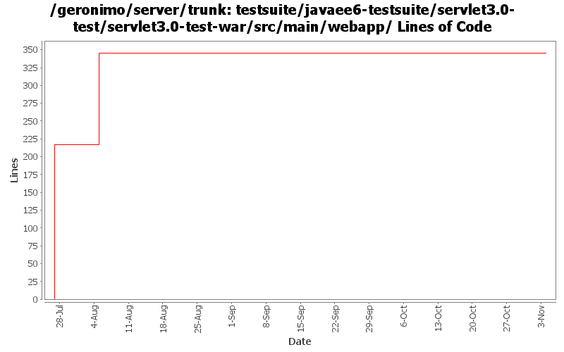

[root]/testsuite/javaee6-testsuite/servlet3.0-test/servlet3.0-test-war/src/main/webapp
 WEB-INF
(2 files, 107 lines)
WEB-INF
(2 files, 107 lines)

| Author | Changes | Lines of Code | Lines per Change |
|---|---|---|---|
| Totals | 11 (100.0%) | 371 (100.0%) | 33.7 |
| xiaming | 8 (72.7%) | 345 (93.0%) | 43.1 |
| xuhaihong | 3 (27.3%) | 26 (7.0%) | 8.6 |
No function change, replace the tab with four spaces
26 lines of code changed in 3 files:
GERONIMO-5471 more test cases about @WebInitParam and @MultipartConfig provided by Wang Guang Zhe
128 lines of code changed in 3 files:
GERONIMO-5471 Rename the projects in the patch provided by Guang Zhe Wang, and update test cases with flexible web app context config
217 lines of code changed in 5 files: